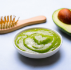

Home Made Facemasks
These masks are designed to cater to different skin needs, from hydrating dry skin to brightening and clarifying. Always do a patch test to make sure you don’t have a reaction to any ingredients, especially if you have sensitive skin. Enjoy your pampering session!
Hydrating Avocado Mask

- Ingredients:
- 1/2 ripe avocado
- 1 tablespoon of honey
- 1 tablespoon of yogurt
- Directions: Mash the avocado in a bowl, then mix in the honey and yogurt until you get a smooth paste. Apply to your face and leave it on for 10-15 minutes before rinsing with warm water.
Brightening Turmeric Mask
- Ingredients:
- 1 tablespoon of turmeric powder
- 1 tablespoon of honey
- a few drops of lemon juice
- Directions: Mix all ingredients to form a paste. Apply to your face and leave it on for about 10 minutes. Rinse thoroughly with warm water and follow with a gentle cleanser to remove any yellow tint.
Soothing Oatmeal Mask
- Ingredients:
- 1/3 cup of cooked oatmeal (cooled)
- 2 tablespoons of honey
- 1-2 tablespoons of milk
- Directions: Mix all the ingredients into a paste. Apply to your face and let it sit for 15-20 minutes. This mask is perfect for soothing irritated or sensitive skin.
Nourishing Banana Mask
- Ingredients:
- 1 ripe banana
- 1 tablespoon of honey
- 1 tablespoon of olive oil
- Directions: Mash the banana with a fork, then mix in the honey and olive oil. Apply to your face and leave on for about 10-15 minutes before rinsing with a warm cloth.